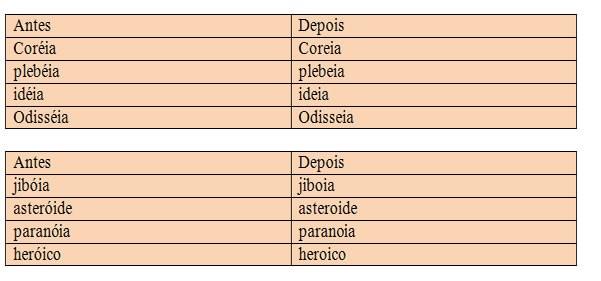
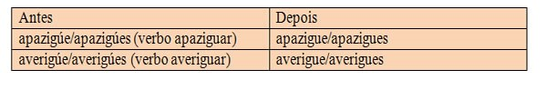
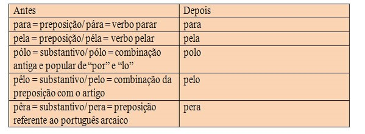

Acentuação no Novo Acordo Ortográfico
Neste artigo você encontrará informações importantes sobre acentuação | 2021
Torna-se necessário enfatizarmos, antes de tudo, que a acentuação se encontra condicionada à tonicidade silábica de uma infinidade de palavras que integram o léxico português. Assim, ao pronunciarmos o vocábulo “café”, constatamos que a última sílaba é pronunciada com mais intensidade - ora denominada de tônica -, e que a primeira não revelou tal aspecto – razão pela qual recebe o nome de átona. Dessa forma, temos que a sílaba tônica se constitui de algumas particularidades, levando-se em conta a posição, o timbre (ou seja, tanto pode representar um som mais aberto, quanto um mais fechado) e a nasalização das vogais.
Oxítonas: Aquelas em que a sílaba tônica se encontra demarcada na última sílaba.
Exemplos: Anzol - café – coração – cipó - condor...
Paroxítonas: aquelas em que a tonicidade está representada pela penúltima sílaba.
Exemplos: caderno – problema – útil – automóvel...
Proparoxítonas – a sílaba tônica encontra-se representada pela antepenúltima sílaba.
Exemplos: lágrima – ônibus – xícara – médico...
Há ainda aqueles vocábulos constituídos por somente uma sílaba – os monossílabos, que também são demarcados pela tonicidade, ou seja, quando apresentam tonicidade, são denominados tônicos, e quando não, átonos.
Assim, de modo a compreendermos como se efetiva tal ocorrência, analisemos:
Que lembrança darei ao país que me deu tudo o que lembro e sei, tudo quanto senti? (Carlos Drummond de Andrade)Aguçando nossa percepção, temos que os monossílabos “que”, “ao”, “me”, “o”, “e” são átonos, visto que são pronunciados tão fracamente que se apoiam na palavra subsequente. Já os monossílabos representados por “deu” e “sei” demonstram ser dotados de autonomia fonética, caracterizando-se, portanto, como tônicos.
Regras fundamentais de acentuação
Elas foram criadas para sistematizar a leitura das palavras das quais cotidianamente compartilhamos, cujo objetivo foi o de tão somente evidenciar todos os aspectos anteriormente ressaltados (posição da sílaba tônica, nasalização e abertura). Com fator resultante deste intento, criou-se um sistema de regras. E por nele falar, há um importante aspecto digno de nota – o fato de ter havido algumas mudanças nestas regras em decorrência do último Acordo Ortográfico, firmado em 1º de janeiro de 2009, em vigor desde tal data.
Dessa forma, o artigo em questão pauta-se por evidenciar as mudanças ocorridas, como também aquelas que ainda permanecem. Portanto, verifiquemos:
Monossílabos tônicos
Graficamente, acentuam-se todos os monossílabos terminados em:
- -a(s): chá, pá...
- -e(s): pé, ré,...
- -o(s): dó, nó...
No entanto, os monossílabos: tu, noz, vez, par, quis, etc., não são acentuados.
Observações importantes:* Os monossílabos tônicos formados por ditongos abertos -éis, -éu, -ói recebem o acento:
Exemplos: réis, véu, dói.
** No caso dos verbos monossilábicos terminados em “-ê”, tem-se que a terceira pessoa do plural termina em “-eem”, forma verbal que antes era acentuada, agora não leva acento.
Exemplos:
- Ele vê - Eles veem
- Ele crê – Eles creem
- Ele lê – Eles leem
*** Diferentemente ocorre com os verbos monossilábicos terminados em “-em”, haja vista que a terceira pessoa termina em “-êm”, permanecendo acentuada. Perceba:
Exemplos:
- Ele tem – Eles têm
- Ela vem – Elas vêm
Oxítonas:: Acentuam-se todas as oxítonas terminadas em “a”, “e”, “o” e “em”, seguidas ou não de “s”.
Exemplos: cajá – até – jiló – armazém – parabéns...
Paroxítonas:: Acentuam-se todos os vocábulos terminados em:
- l: afável, incrível, útil...
- r: caráter, éter, mártir...
- n: hífen, próton... Observação: quando grafadas no plural, não recebem acento: polens, hifens...
- x: látex, tórax...
- os: fórceps, bíceps...
- ã(s): ímã, órfãs...
- ão(s): sótão(s), bênção(s)...
- um(s): fórum, álbum...
- on(s): elétron, próton...
- i(s): táxi, júri...
- u(s): Vênus, ônus...
+Observações
a) De acordo com a nova ortografia, os ditongos terminados em –ei e –oi, não são mais acentuados. Perceba o aspecto referente à condição de antes e à que atualmente vigora:
Entretanto, o acento ainda permanece nas oxítonas terminadas em –éu, -ói e éis:
Exemplos: chapéu – herói - fiéis...
b) Não serão mais acentuados o “i” e “u” tônicos quando, depois de ditongo, formarem hiato. Note:

No entanto, o acento permanece se a palavra for oxítona e o “i” ou “u” estiver seguido de “s” ou no final da palavra. Como, por exemplo, em:
Exemplos: Piauí – tuiuiú(s) – sauí(s)...
O mesmo acontece com o “i” e o “u” tônicos dos hiatos, não antecedidos de ditongos:
Exemplos: juíza – ruído – graúna - saúde – saúva...
* As formas verbais que possuem o acento tônico na raiz, com o (u) tônico precedido de “g” ou “q” e seguido de “e” ou “i” não serão mais acentuadas:
Observações importantes:
Há variação de pronúncia em alguns verbos terminados em “-guar”, “-quar” e “-quir”, visto que admitem duas pronúncias em algumas formas do presente do indicativo, subjuntivo e imperativo. Assim, no caso de os verbos serem pronunciados com “a” ou “i” tônicos, essas formas deverão ser acentuadas. Exemplificando, temos os verbos aguar, averiguar, apaziguar, desaguar, enxaguar, obliquar e delinquir.
Exemplos
Presente do indicativo
Eu deságuo
Tu deságuas
Ele/eles deságua (m)
Subjuntivo
Que eu deságue
Que tu deságues
Que ele/eles deságue (m)
Imperativo
deságues tu
deságue você
deságuem eles
- Caso os verbos forem pronunciados com o “u” tônico, essas formas não serão acentuadas. Assim como:
Exemplos: Eu desaguo / Que eu desague / Desagues tu
* O acento agudo não será mais usado para diferenciar determinados vocábulos, tais como:
Porém, o acento ainda permanece para diferenciar algumas palavras, expressas por:
pôde = 3ª pessoa do pretérito perfeito do indicativo (verbo poder)
pode = 3ª pessoa do presente do indicativo (verbo poder)
pôr = verbo
por = preposição